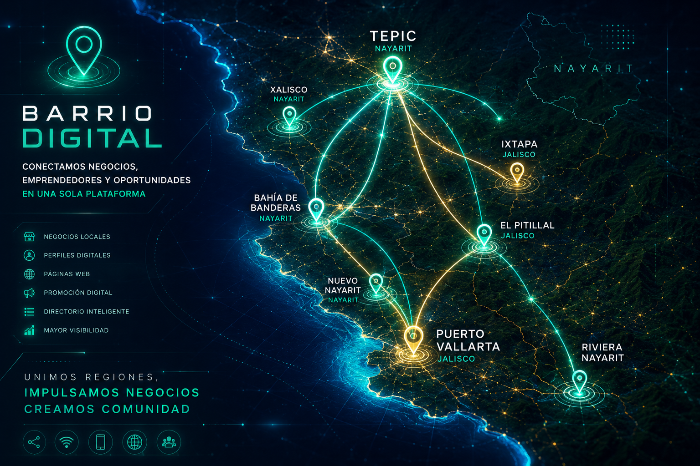

Creamos presencia digital para negocios, emprendedores, profesionales e inmobiliarias. Conectamos personas con marcas reales en Tepic, Puerto Vallarta, Bahía de Banderas y Riviera Nayarit.
Quiero mi perfil Quiero más información Conoce Barrio DigitalBarrio Digital es una plataforma creada para dar visibilidad a negocios, servicios, emprendedores, profesionales e inmobiliarias mediante perfiles digitales, páginas web, directorios especializados, campañas de promoción y presencia en redes sociales.
Nuestro objetivo es que cada negocio pueda ser encontrado, presentado y contactado de manera profesional desde cualquier celular.
Diseñamos páginas de presentación para negocios, propiedades, servicios y desarrollos.
Creamos perfiles dentro de Barrio Digital con información, contacto, fotos y ubicación.
Integramos negocios en una plataforma organizada por categorías y zonas.
Apoyamos la difusión mediante publicaciones, campañas, QR y estrategias de visibilidad.
Promoción de propiedades, asesores, desarrollos, terrenos y oportunidades de inversión.
Moda, accesorios, belleza, catálogo, comida, servicios y marcas personales.
Barrio Digital conecta negocios, emprendedores, profesionistas, inmobiliarias y empresas entre Tepic, Xalisco, Puerto Vallarta, Bahía de Banderas, Nuevo Nayarit, Riviera Nayarit, Ixtapa y El Pitillal.

Construir una red digital donde los negocios locales puedan competir con una imagen profesional, sin depender únicamente de publicaciones que se pierden en redes sociales.
Queremos que cada negocio tenga un lugar propio donde pueda mostrar quién es, qué ofrece, dónde se encuentra y cómo contactarlo.
Creamos una presentación profesional para tu negocio.
Tu negocio aparece dentro de una plataforma organizada y fácil de explorar.
Generamos accesos rápidos para compartir tu perfil desde anuncios, tarjetas o publicaciones.
Impulsamos la visibilidad mediante Facebook, Instagram, comentarios y publicaciones.
Promocionamos categorías, negocios y perfiles dentro de zonas estratégicas.
Conectamos consumidores, empresas, asesores, emprendedores y servicios locales.
Ropa, accesorios, ventas por catálogo, paca, belleza, detalles y productos locales.
Restaurantes, ferreterías, talleres, tiendas, servicios y comercios.
Abogados, médicos, arquitectos, consultores, especialistas y asesores.
Propiedades, terrenos, desarrollos, asesores y firmas inmobiliarias.
Marcas, constructoras, servicios especializados y negocios establecidos.
Explora la plataforma y descubre cómo se verán los negocios, categorías, perfiles y oportunidades dentro de Barrio Digital.
Entrar a Barrio Digital